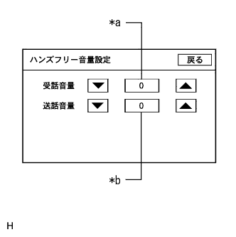

).
).Hands-free System Diagnosis System |
).). |
Hands-free Volume Setting
Start diagnosis and display the service check screen.
Select "Function Inspection/Adjustment" on the service inspection screen to display the function inspection/adjustment screen.
Select "Hands-free Volume Setting" on the function check/adjustment screen to display the hands-free volume setting screen.
Operate the screen switches to adjust the volume.
| Item | Display Content |
|---|---|
| Receiving Volume Adjustment | Adjusts the receiving volume (other party's voice heard by you) during hands-free calls |
| Transmitting Volume | Transmitting volume (your voice heard by the other party) during hands-free calls - automatic adjustment |
| *a | Receiving Volume Adjustment |
| *b | Transmitting Volume |